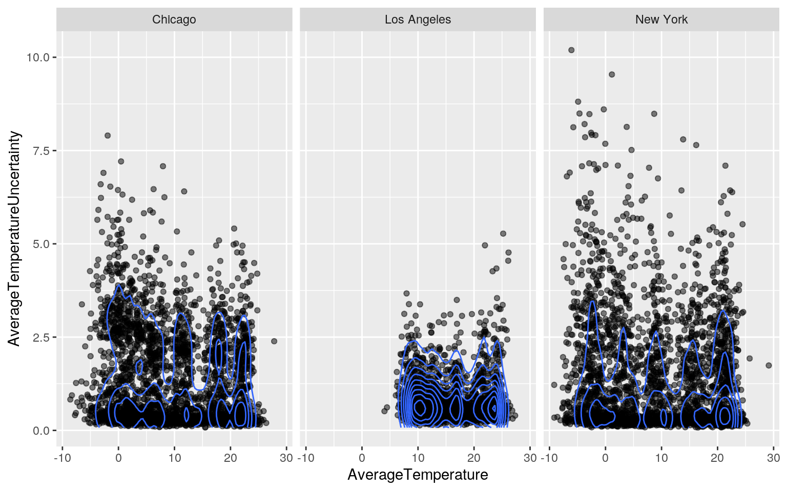
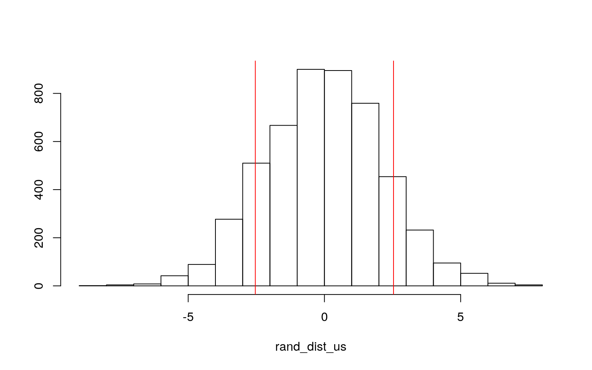
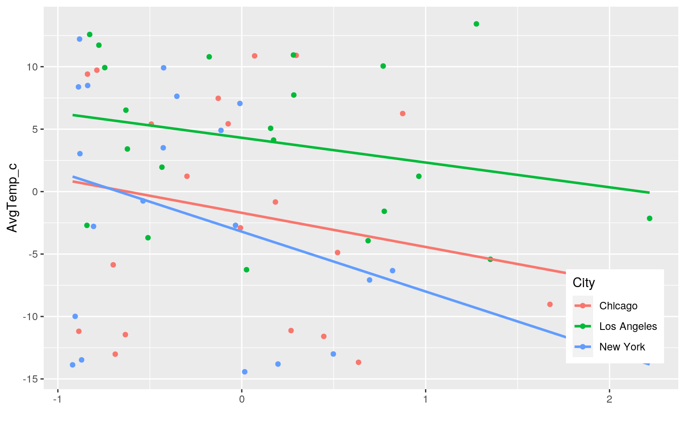
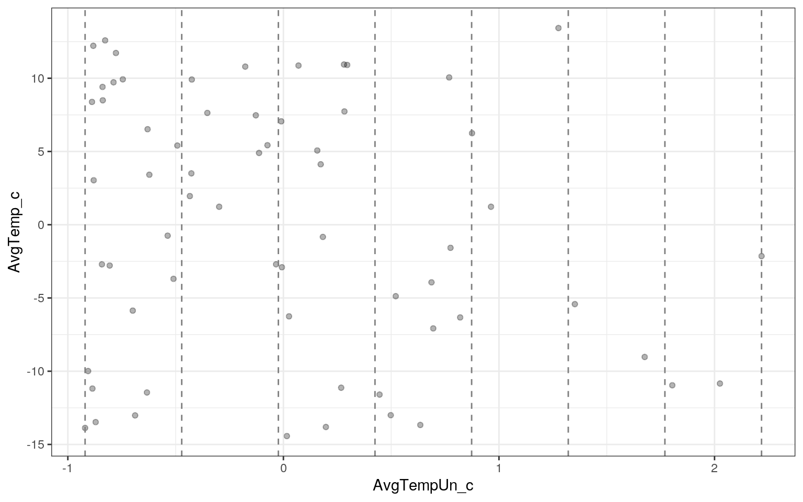
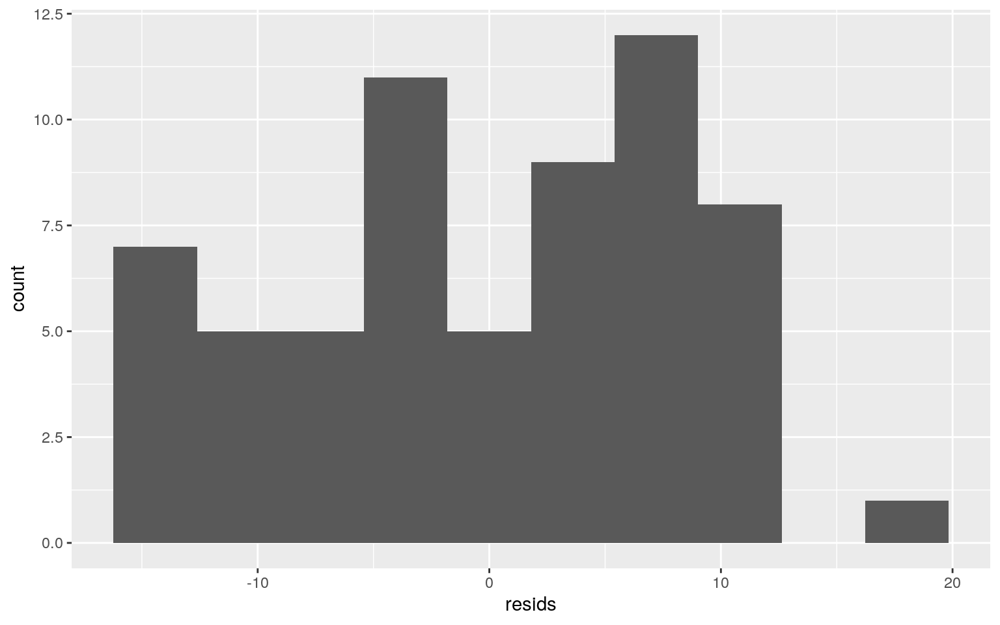
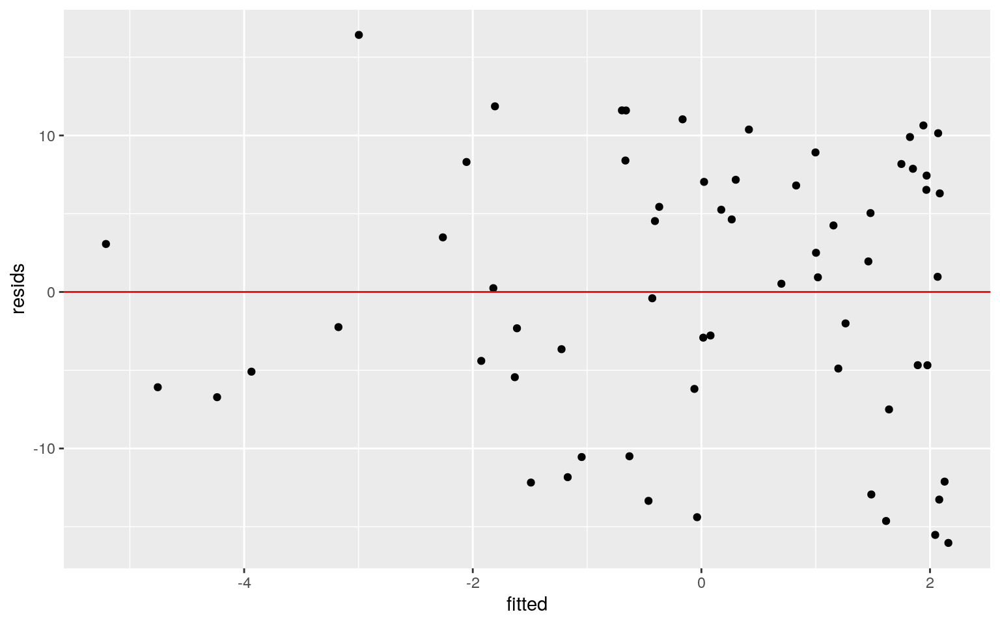
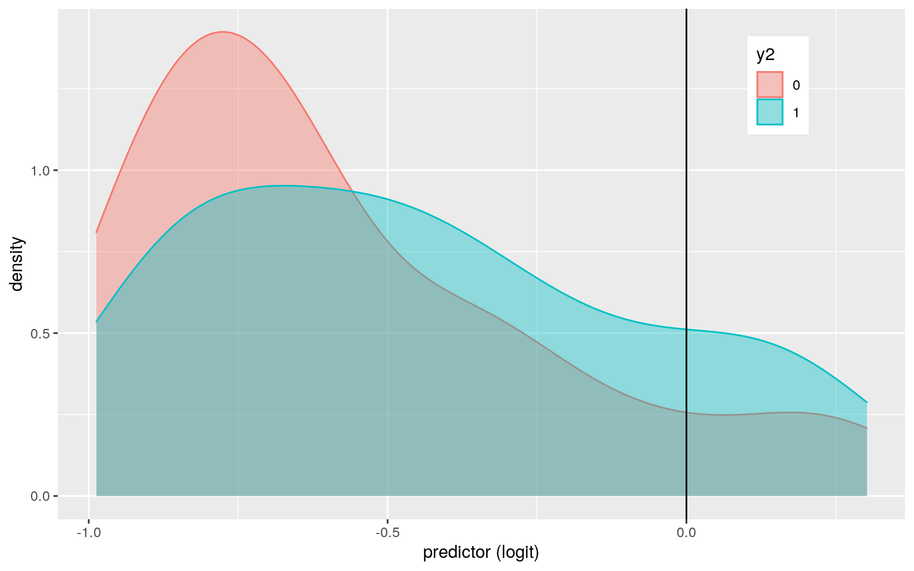
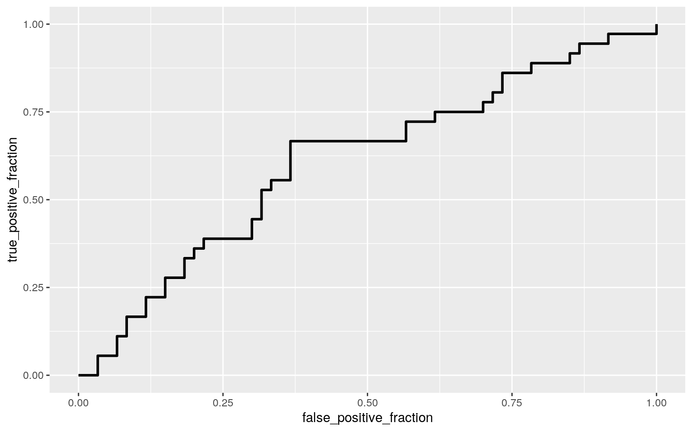

My dataset contains data regarding global land temperature change of major cities in the world collected from 1849 to 2013. The variables of this dataset are date (dt), average temperature, average temperature uncertainty, city, country, latitude, and longitude. dt contains year, month, and day that the data was collected (yyyy-mm-dd). AverageTemperature is temperature in Celcius, and AverageTemperatureUncertainty is the 95% confidence interval around the average temperature. City and Country contain names of cities and countries, respectively. Latitude and Longitude describe the geographical latitude and longitude of each city. There are total of 7 variables and 239,177 observations. However, for this project, I am going to alter the dataset by only selecting cities in the United States, removing all the NA's, and separating dt to year, month, and day. Thus, there are total of 9 variables (7 categorical and 2 numeric) and 8,237 observations.
library(dplyr)
select <- dplyr::select
library(tidyverse)
library(lmtest)
library(sandwich)
globalTemp <- read_csv("GlobalLandTemperaturesByMajorCity.csv")
globalTemp %>% filter(Country == "United States") %>% na.omit() %>% separate(dt, sep = "-", into = c("Year", "Month", "Day")) -> us
head(us)## # A tibble: 6 x 9
## Year Month Day AverageTemperature
AverageTemperatureUncer… City Country Latitude Longitude
## <chr> <chr> <chr> <dbl> <dbl> <chr> <chr> <chr> <chr>
## 1 1743 11 01 5.44 2.20 Chica… United St… 42.59N 87.27W
## 2 1744 04 01 8.77 2.36 Chica… United St… 42.59N 87.27W
## 3 1744 05 01 11.6 2.10 Chica… United St… 42.59N 87.27W
## 4 1744 06 01 18.0 1.99 Chica… United St… 42.59N 87.27W
## 5 1744 07 01 21.7 1.79 Chica… United St… 42.59N 87.27W
## 6 1744 09 01 17.0 1.93 Chica… United St… 42.59N 87.27Wus %>% count()## # A tibble: 1 x 1
## n
## <int>
## 1 8237#MANOVA
man_us <- manova(cbind(AverageTemperature,AverageTemperatureUncertainty)~City, data=us)
summary(man_us)## Df Pillai approx F num Df den Df Pr(>F)
## City 2 0.10947 238.38 4 16468 < 2.2e-16 ***
## Residuals 8234
## ---
## Signif. codes: 0 '***' 0.001 '**' 0.01 '*' 0.05 '.' 0.1
' ' 1#univariate ANOVAs
summary.aov(man_us)## Response AverageTemperature :
## Df Sum Sq Mean Sq F value Pr(>F)
## City 2 56012 28006.2 421.37 < 2.2e-16 ***
## Residuals 8234 547265 66.5
## ---
## Signif. codes: 0 '***' 0.001 '**' 0.01 '*' 0.05 '.' 0.1
' ' 1
##
## Response AverageTemperatureUncertainty :
## Df Sum Sq Mean Sq F value Pr(>F)
## City 2 421.2 210.607 136.96 < 2.2e-16 ***
## Residuals 8234 12661.5 1.538
## ---
## Signif. codes: 0 '***' 0.001 '**' 0.01 '*' 0.05 '.' 0.1
' ' 1#post-hoc t-tests
us %>% group_by(City) %>% summarize(mean(AverageTemperature), mean(AverageTemperatureUncertainty))## # A tibble: 3 x 3
## City `mean(AverageTemperature)`
`mean(AverageTemperatureUncertainty)`
## <chr> <dbl> <dbl>
## 1 Chicago 10.1 1.33
## 2 Los Angeles 15.9 0.798
## 3 New York 9.52 1.33pairwise.t.test(us$AverageTemperature,us$City, p.adj="none")##
## Pairwise comparisons using t tests with pooled SD
##
## data: us$AverageTemperature and us$City
##
## Chicago Los Angeles
## Los Angeles <2e-16 -
## New York 0.0079 <2e-16
##
## P value adjustment method: nonepairwise.t.test(us$AverageTemperatureUncertainty,us$City, p.adj="none")##
## Pairwise comparisons using t tests with pooled SD
##
## data: us$AverageTemperatureUncertainty and us$City
##
## Chicago Los Angeles
## Los Angeles <2e-16 -
## New York 0.98 <2e-16
##
## P value adjustment method: none#multivariate normality
ggplot(us, aes(x = AverageTemperature, y = AverageTemperatureUncertainty)) +
geom_point(alpha = .5) + geom_density_2d(h=2) + facet_wrap(~City)
I conducted a one-way MANOVA to determine the effect of the US Cities (Chicago, Los Angeles, and New York) on two numeric variables (Average Temperature and Average Temperature Uncertainty).
For my MANOVA testing, my null hypothesis is that for both numeric variables (AverageTemperature and AverageTemperatureUncertainty), means for each City are equal. My alternative hypothesis is that for at least one numeric variable, at least one City mean is different. According to my MANOVA testing, there is a significant mean different across cities (At least one city differs for at least one response variable) (pseudo F(4, 16468) = 238.38, p < 0.0001).
So, I performed univariate ANOVAs to find which numeric variable is significant. Doing so, I found that both numeric variables are significant and present group differences. This means that for Average Temperature and Average Temperature Uncertainty, at least one City differs (pseudo F(2, 8234) = 136.96, p < 0.0001).
Then, I ran t-tests to find which groups differ in AverageTemperature. I also ran t-tests for AverageTemperatureUncertainty. I performed total of 9 tests (1 MANOVA, 2 ANOVAS, and 6 t-tests). The probability of at least one type I error is 0.3698 (1-0.95^9=0.3698), and the bonferroni alpha value is 0.0056 (0.05/9=0.0056).
With no adjustment, the comparisons among all of the cities are statistically significant in Average Temperature. For Average Temperature Uncertainty, the comparisons between Chicago and Los Angeles as well as between New York and Los Angeles are statistically significant; however, the comparison between Chicago and New York is not. However, using the Bonferroni value of 0.0056, only the comparisons between Chicago and Los Angeles and between New York and Los Angeles are significant for both Average Temperature and Average Temperature Uncertainty.
MANOVA assumptions are 1) samples are random and independent, 2) there is a multivariate normality of dependent variables, 3) there is homogeneity of within-group covariance matrices, 4) there are linear relationships among dependent variables, 5) there are no extreme univariate or multivariate outliers, and 6) there is no multicollinearity. It is difficult to tell if any of these assumptions were met in my dataset, especially because data in my dataset are not random and does not have multivariate normality. There might be homogeneity of covariances, but I am not too sure. In conclusion, it is likely that my data does not meet most of the MANOVA assumptions.
# observed difference in means
us %>% filter(Year %in% c("1850", "2013")) %>% group_by(Year) %>%
summarize(means=mean(AverageTemperature)) %>% summarize(`mean_diff`=diff(means))## # A tibble: 1 x 1
## mean_diff
## <dbl>
## 1 2.54#randomization test
rand_dist_us <- vector() #create vector to hold diffs under null hypothesis
for(i in 1:5000){
new<-data.frame(temp=sample(us$AverageTemperature),year=us$Year) #scramble columns
rand_dist_us[i]<-mean(new[new$year=="1850",]$temp)-
mean(new[new$year=="2013",]$temp)} #compute mean difference (base R)
#p-values
mean(rand_dist_us>2.5361 | rand_dist_us < -2.5361) #p-value > 0.05 so fail to reject H0!## [1] 0.2406#t-test
us %>% filter(Year %in% c("1850", "2013")) %>% group_by(Year) -> us2
t.test(data=us2, AverageTemperature~Year) #same result##
## Welch Two Sample t-test
##
## data: AverageTemperature by Year
## t = -1.1383, df = 54.72, p-value = 0.26
## alternative hypothesis: true difference in means is not
equal to 0
## 95 percent confidence interval:
## -7.001548 1.929418
## sample estimates:
## mean in group 1850 mean in group 2013
## 11.42108 13.95715#plot
{hist(rand_dist_us ,main="", ylab=""); abline(v = c(-2.5361, 2.5361), col="red")}
For this question, I first selected Year 1850 and Year 2013 data and grouped the data by Year. I, then, calculated the mean differences of average temperature between those two years. The mean difference was 2.745, meaning that there was an increase in average temperature from 1850 and 2013.
Next, I performed a randomization test by doing 5000 random permutations of Average Temperature of Year 1850 and Year 2013. My null hypothesis is that the mean temperature is the same for Year 1850 and Year 2013, and my alternative hypothesis is that mean temperature is different for Year 1850 and Year 2013. I calculated for the p-value of this permutation test. The p-value of 0.4768 means that I fail to reject my null hypothesis because it is greater than 0.05. I also ran a t-test to confirm my result. Since the p-value of this t-test was 0.3953, I still fail to reject my null hypothesis.
I also created a plot that presents the null distribution that I got from the randomization test as well as the mean difference values (test statistic).
3. (35 pts) Build a linear regression model predicting one of your response variables from at least 2 other variables, including their interaction. Mean-center any numeric variables involved in the interaction.
ggplot() using geom_smooth(method="lm"). If your interaction is numeric by numeric, refer to code in the slides to make the plot or check out the interactions package, which makes this easier. If you have 3 or more predictors, just chose two of them to plot for convenience. (8)coeftest(..., vcov=vcovHC(...)). Discuss significance of results, including any changes from before/after robust SEs if applicable. (8)#linear regression
us2$AvgTemp_c <- us2$AverageTemperature - mean(us2$AverageTemperature)
us2$AvgTempUn_c <- us2$AverageTemperatureUncertainty - mean(us2$AverageTemperatureUncertainty)
fit_us2 <- lm(AvgTemp_c ~ City*AvgTempUn_c, data=us2)
summary(fit_us2)##
## Call:
## lm(formula = AvgTemp_c ~ City * AvgTempUn_c, data = us2)
##
## Residuals:
## Min 1Q Median 3Q Max
## -15.0768 -6.9653 0.3418 7.0557 13.4169
##
## Coefficients:
## Estimate Std. Error t value Pr(>|t|)
## (Intercept) -1.7007 1.7929 -0.949 0.3469
## CityLos Angeles 6.0097 2.5543 2.353 0.0221 *
## CityNew York -1.5061 2.5972 -0.580 0.5643
## AvgTempUn_c -2.7338 2.3173 -1.180 0.2430
## CityLos Angeles:AvgTempUn_c 0.7518 3.1630 0.238 0.8130
## CityNew York:AvgTempUn_c -2.0604 3.4291 -0.601 0.5503
## ---
## Signif. codes: 0 '***' 0.001 '**' 0.01 '*' 0.05 '.' 0.1
' ' 1
##
## Residual standard error: 8.183 on 57 degrees of freedom
## Multiple R-squared: 0.1895, Adjusted R-squared: 0.1184
## F-statistic: 2.665 on 5 and 57 DF, p-value: 0.03112#ggplot
ggplot(us2, aes(x=AvgTempUn_c, y=AvgTemp_c, group=City)) + geom_point(aes(color=City))+
geom_smooth(method="lm", se=F, fullrange=T, aes(color=City))+
theme(legend.position=c(0.9, 0.19)) + xlab("")
#checking assumptions
#linearity
breaks <- seq(min(us2$AvgTempUn_c), max(us2$AvgTempUn_c), len=8)
ggplot(us2, aes(AvgTempUn_c, AvgTemp_c)) + geom_point(alpha=.3) + theme_bw() +
geom_vline(xintercept=breaks, lty=2,color='gray50')
#normality
resids<-lm(AvgTemp_c~AvgTempUn_c, data=us2)$residuals
ggplot()+geom_histogram(aes(resids),bins=10)
shapiro.test(resids)##
## Shapiro-Wilk normality test
##
## data: resids
## W = 0.95437, p-value = 0.02028#homoskedasticity
fitted<-lm(AvgTemp_c~AvgTempUn_c, data=us2)$fitted.values
ggplot()+geom_point(aes(fitted,resids)) + geom_hline(yintercept=0, color='red')
#uncorrected SE
summary(fit_us2)##
## Call:
## lm(formula = AvgTemp_c ~ City * AvgTempUn_c, data = us2)
##
## Residuals:
## Min 1Q Median 3Q Max
## -15.0768 -6.9653 0.3418 7.0557 13.4169
##
## Coefficients:
## Estimate Std. Error t value Pr(>|t|)
## (Intercept) -1.7007 1.7929 -0.949 0.3469
## CityLos Angeles 6.0097 2.5543 2.353 0.0221 *
## CityNew York -1.5061 2.5972 -0.580 0.5643
## AvgTempUn_c -2.7338 2.3173 -1.180 0.2430
## CityLos Angeles:AvgTempUn_c 0.7518 3.1630 0.238 0.8130
## CityNew York:AvgTempUn_c -2.0604 3.4291 -0.601 0.5503
## ---
## Signif. codes: 0 '***' 0.001 '**' 0.01 '*' 0.05 '.' 0.1
' ' 1
##
## Residual standard error: 8.183 on 57 degrees of freedom
## Multiple R-squared: 0.1895, Adjusted R-squared: 0.1184
## F-statistic: 2.665 on 5 and 57 DF, p-value: 0.03112#corrected SE
coeftest(fit_us2, vcov = vcovHC(fit_us2))##
## t test of coefficients:
##
## Estimate Std. Error t value Pr(>|t|)
## (Intercept) -1.70066 2.09677 -0.8111 0.4207
## CityLos Angeles 6.00967 2.57011 2.3383 0.0229 *
## CityNew York -1.50607 2.73496 -0.5507 0.5840
## AvgTempUn_c -2.73376 2.37509 -1.1510 0.2545
## CityLos Angeles:AvgTempUn_c 0.75176 2.98066 0.2522
0.8018
## CityNew York:AvgTempUn_c -2.06042 3.21489 -0.6409 0.5242
## ---
## Signif. codes: 0 '***' 0.001 '**' 0.01 '*' 0.05 '.' 0.1
' ' 1I first mean-centered AverageTemperature and conducted a linear regression to predict AvgTemp_c from three Cities and Average Temperature Uncertainty.
The intercept value of -1.701 is mean/predicted Average Temperature for average AvgTempUn_c in Chicago. The coefficient estimate for Los Angeles, which is 6.010, means that the average temperature of Los Angeles is 6.010 degrees higher than that of Chicago. The coefficient value of -1.506 for New York means that New York's Average Temperature is 1.506 degrees lower than Chicago's Average Temperature.
Estimated slope for Average Temperature Uncertainty on Average Temperature for the city of Chicago is -2.734. The slope of Average Temperature Uncertainty on Average Temperature for Los Angeles is 0.752 degrees higher than for Chicago. Finally, the slope of Average Temperature Uncertainty on Average Temperature for New York is 2.060 degrees lower than for Chicago.
According to my scatterplot, AvgTempUn_c and AvgTemp_c do not meet the linearity assumption. Since the null hypothesis for the Shapiro-Wilk test is that true distribution is normal, the p-value of 0.6433 suggests that I fail to reject the null hypothesis. Thus, the sample meets the normality assumption. Also, the histogram looks pretty normal. It is difficult to decide if the variance is constant, but it seems like it somewhat meets the homoskedasticity assumption because there is no obvious fanning out of data points.
None of the estimate coefficient values changed much after recomputing my regression results. Only Los Angeles was the significant predicting factor of average temperature. According to the multiple R-squared value, 18.95% of variation in Average Temperature is explained. The adjusted R-squared says 3.11% is explained.
fit_us2 <- lm(AvgTemp_c ~ City*AvgTempUn_c, data=us2)
boot_dat_us <- sample_frac(us2, replace=T)
samp_distn_us <- replicate(5000, {
boot_dat_us <- sample_frac(us2, replace=T) #take bootstrap sample of rows
fit <- lm(AvgTemp_c ~ City*AvgTempUn_c, data=boot_dat_us) #fit model on bootstrap sample
coef(fit) #save coefs
})
## Estimated/boostrap SEs
samp_distn_us %>% t %>% as.data.frame %>% summarize_all(sd) ## (Intercept) CityLos Angeles CityNew York AvgTempUn_c
CityLos Angeles:AvgTempUn_c
## 1 1.973439 2.416571 2.694813 2.67709 3.250975
## CityNew York:AvgTempUn_c
## 1 3.748226## Empirical 95% CI
samp_distn_us %>% t %>% as.data.frame %>% pivot_longer(1:6) %>% group_by(name) %>%
summarize(lower=quantile(value,.025), upper=quantile(value,.975))## # A tibble: 6 x 3
## name lower upper
## <chr> <dbl> <dbl>
## 1 (Intercept) -5.46 2.24
## 2 AvgTempUn_c -7.01 3.78
## 3 CityLos Angeles 1.06 10.5
## 4 CityLos Angeles:AvgTempUn_c -6.49 6.55
## 5 CityNew York -6.85 3.61
## 6 CityNew York:AvgTempUn_c -10.6 4.47coeftest(fit_us2) #original SEs##
## t test of coefficients:
##
## Estimate Std. Error t value Pr(>|t|)
## (Intercept) -1.70066 1.79294 -0.9485 0.34686
## CityLos Angeles 6.00967 2.55430 2.3528 0.02211 *
## CityNew York -1.50607 2.59718 -0.5799 0.56428
## AvgTempUn_c -2.73376 2.31726 -1.1797 0.24301
## CityLos Angeles:AvgTempUn_c 0.75176 3.16299 0.2377
0.81299
## CityNew York:AvgTempUn_c -2.06042 3.42908 -0.6009
0.55031
## ---
## Signif. codes: 0 '***' 0.001 '**' 0.01 '*' 0.05 '.' 0.1
' ' 1coeftest(fit_us2, vcov=vcovHC(fit_us2)) #robust SEs##
## t test of coefficients:
##
## Estimate Std. Error t value Pr(>|t|)
## (Intercept) -1.70066 2.09677 -0.8111 0.4207
## CityLos Angeles 6.00967 2.57011 2.3383 0.0229 *
## CityNew York -1.50607 2.73496 -0.5507 0.5840
## AvgTempUn_c -2.73376 2.37509 -1.1510 0.2545
## CityLos Angeles:AvgTempUn_c 0.75176 2.98066 0.2522
0.8018
## CityNew York:AvgTempUn_c -2.06042 3.21489 -0.6409 0.5242
## ---
## Signif. codes: 0 '***' 0.001 '**' 0.01 '*' 0.05 '.' 0.1
' ' 1Even after bootstrapping, all of the variables/interactions stayed the same. Los Angeles was still the only significant factor because its 95% intervals does not include 0. The rest of them did have 0, meaning that I cannot reject the null hypothesis of significance. Original SEs and robust SEs also show the same result.
5. (25 pts) Fit a logistic regression model predicting a binary variable (if you don't have one, make/get one) from at least two explanatory variables (interaction not necessary).
us %>% filter(Year %in% c("1800", "1900", "2000")) %>% mutate(y=ifelse(City=="Chicago",1,0)) -> us3
us3$AvgTemp_c <- us3$AverageTemperature - mean(us3$AverageTemperature)
fit_us3 <- glm(y~AvgTemp_c+Year, data=us3, family=binomial(link="logit"))
summary(fit_us3)##
## Call:
## glm(formula = y ~ AvgTemp_c + Year, family =
binomial(link = "logit"),
## data = us3)
##
## Deviance Residuals:
## Min 1Q Median 3Q Max
## -1.3079 -0.9198 -0.8344 1.3038 1.6150
##
## Coefficients:
## Estimate Std. Error z value Pr(>|z|)
## (Intercept) -0.04421 0.41323 -0.107 0.915
## AvgTemp_c -0.02246 0.02522 -0.890 0.373
## Year1900 -0.64236 0.54488 -1.179 0.238
## Year2000 -0.63734 0.54541 -1.169 0.243
##
## (Dispersion parameter for binomial family taken to be 1)
##
## Null deviance: 127.02 on 95 degrees of freedom
## Residual deviance: 124.13 on 92 degrees of freedom
## AIC: 132.13
##
## Number of Fisher Scoring iterations: 4exp(coef(fit_us3))## (Intercept) AvgTemp_c Year1900 Year2000
## 0.9567525 0.9777935 0.5260510 0.5286994#confusion matrix
probs_us <- predict(fit_us3,type="response")
table(predict=as.numeric(probs_us>.5),truth=us3$y) %>% addmargins## truth
## predict 0 1 Sum
## 0 55 30 85
## 1 5 6 11
## Sum 60 36 96#accuracy
(55+6)/96## [1] 0.6354167#sensitivity (TPR)
6/36## [1] 0.1666667#specificity (TNR)
55/60 ## [1] 0.9166667#precision (PPV)
6/11## [1] 0.5454545#predicted probabilities
fit_us4 <- glm(y~AvgTemp_c+Year, data=us3, family="binomial")
us3$prob <- predict(fit_us4,type="response")
#density plot
us3$logit <- predict(fit_us4,type="link") #get predicted logit scores (logodds)
us3$y %>% as.character() -> us3$y2
us3 %>% ggplot() + geom_density(aes(logit,color=y2,fill=y2), alpha=.4) +
theme(legend.position=c(.85,.85)) + geom_vline(xintercept=0) + xlab("predictor (logit)") 
#ROC plot & AUC
library(plotROC)
ROCplot <- ggplot(us3)+geom_roc(aes(d=y, m=prob), n.cuts=0)
ROCplot
calc_auc(ROCplot)## PANEL group AUC
## 1 1 -1 0.6087963#classification diagnostics
class_diag <- function(probs,truth){
#CONFUSION MATRIX: CALCULATE ACCURACY, TPR, TNR, PPV
tab<-table(factor(probs>.5,levels=c("FALSE","TRUE")),truth)
acc=sum(diag(tab))/sum(tab)
sens=tab[2,2]/colSums(tab)[2]
spec=tab[1,1]/colSums(tab)[1]
ppv=tab[2,2]/rowSums(tab)[2]
f1=2*(sens*ppv)/(sens+ppv)
if(is.numeric(truth)==FALSE & is.logical(truth)==FALSE) truth<-as.numeric(truth)-1
#CALCULATE EXACT AUC
ord<-order(probs, decreasing=TRUE)
probs <- probs[ord]; truth <- truth[ord]
TPR=cumsum(truth)/max(1,sum(truth))
FPR=cumsum(!truth)/max(1,sum(!truth))
dup<-c(probs[-1]>=probs[-length(probs)], FALSE)
TPR<-c(0,TPR[!dup],1); FPR<-c(0,FPR[!dup],1)
n <- length(TPR)
auc<- sum( ((TPR[-1]+TPR[-n])/2) * (FPR[-1]-FPR[-n]) )
data.frame(acc,sens,spec,ppv,f1,auc)
}
prob_us1 <- predict(fit_us3,type="response")
class_diag(prob_us1,us3$y)## acc sens spec ppv f1 auc
## 1 0.6354167 0.1666667 0.9166667 0.5454545 0.2553191
0.6087963The odds of a city being Chicago for when average temerature is 0 in Year 1800 is 0.957. Controlling for Year, for every additional degree in Average Temperature, odds of a city being Chicago is 0.978. Controlling for Average Temperature, odds of a city being Chicago for Year 1900 is 0.526 times odds of admissioin for Year 1800. Finally, controlling for Average Temperature, odds of a city being Chicago for Year 2000 is 0.529 times odds of admissioin for Year 1800.
The accuracy is 0.635, which means that the correct number of predictions over total predictions is 63.5%. The sensitivity is 0.167, meaning that the probability of correctly predicting a city being Chicago. The Specificity is 0.917, which represent the probability of predicting a city not being Chicago when it is not Chicago. The precision is 0.545, which is the proportion of predicted city being Chicago being actually Chicago. The AUC value is 0.609, which falls into the poor AUC category. This means that the probability that a randomly selected manual has a higher predicted probability than a randomly selected is only 60.9%. The ROC curve does not look very ideal either. I also performed classification diagnostics to confirm my results.
6. (25 pts) Perform a logistic regression predicting the same binary response variable from ALL of the rest of your variables (the more, the better!)
- Fit model, compute in-sample classification diagnostics (Accuracy, Sensitivity, Specificity, Precision, AUC), and interpret (5)
- Perform 10-fold (or repeated random sub-sampling) CV with the same model and report average out-of-sample classification diagnostics (Accuracy, Sensitivity, Specificity, Precision, and AUC); interpret AUC and compare with the in-sample metrics (10)
- Perform LASSO on the same model/variables. Choose lambda to give the simplest model whose accuracy is near that of the best (i.e., `lambda.1se`). Discuss which variables are retained. (5)
- Perform 10-fold CV using only the variables lasso selected: compare model's out-of-sample AUC to that of your logistic regressions above (5)#classification diagnostics
us3 %>% select(-Country, -Day, -y2, -City, -Latitude, -Longitude) -> us4
fit_us5 <- glm(y~., data=us4, family="binomial")
prob_us2 <- predict(fit_us5,type="response")
class_diag(prob_us2,us4$y)## acc sens spec ppv f1 auc
## 1 0.59375 0.2222222 0.8166667 0.4210526 0.2909091
0.6444444#10-fold CV
k=10 #choose number of folds
data<-us4[sample(nrow(us4)),] #randomly order rows
folds<-cut(seq(1:nrow(us4)),breaks=k,labels=F) #create folds
diags<-NULL
for(i in 1:k){
## Create training and test sets
train<-data[folds!=i,]
test<-data[folds==i,]
truth<-test$y ## Truth labels for fold i
## Train model on training set (all but fold i)
fit<-glm(y~.,data=train,family="binomial")
## Test model on test set (fold i)
probs<-predict(fit,newdata = test,type="response")
## Get diagnostics for fold i
diags<-rbind(diags,class_diag(probs,truth))
}
summarize_all(diags,mean) #average diagnostics across all k folds## acc sens spec ppv f1 auc
## 1 0.3744444 0.03333333 0.585 0.05 NaN 0.3480992#lasso
library(glmnet)
y<-as.matrix(us4$y) #grab response
x<-model.matrix(y~.,data=us4)[,-1] #grab predictors
head(x)## Year1900 Year2000 Month02 Month03 Month04 Month05
Month06 Month07 Month08 Month09 Month10 Month11
## 1 0 0 0 0 0 0 0 0 0 0 0 0
## 2 0 0 1 0 0 0 0 0 0 0 0 0
## 3 0 0 0 1 0 0 0 0 0 0 0 0
## 4 0 0 0 0 1 0 0 0 0 0 0 0
## 5 0 0 0 0 0 1 0 0 0 0 0 0
## 6 0 0 0 0 0 0 1 0 0 0 0 0
## Month12 AverageTemperature AverageTemperatureUncertainty
AvgTemp_c prob logit
## 1 0 -0.863 2.683 -12.6755312 0.5598222 0.24044047
## 2 0 -0.101 3.499 -11.9135313 0.5556012 0.22332844
## 3 0 2.120 3.458 -9.6925312 0.5432546 0.17345204
## 4 0 8.439 2.353 -3.3735312 0.5078863 0.03154794
## 5 0 11.329 2.192 -0.4835312 0.4916628 -0.03335201
## 6 0 17.908 2.173 6.0954688 0.4548496 -0.18109486cv<-cv.glmnet(x,y,family="binomial")
lasso<-glmnet(x,y,family="binomial",lambda=cv$lambda.1se)
coef(lasso)## 19 x 1 sparse Matrix of class "dgCMatrix"
## s0
## (Intercept) -0.5108256
## Year1900 0.0000000
## Year2000 .
## Month02 .
## Month03 .
## Month04 .
## Month05 .
## Month06 .
## Month07 .
## Month08 .
## Month09 .
## Month10 .
## Month11 .
## Month12 .
## AverageTemperature .
## AverageTemperatureUncertainty .
## AvgTemp_c .
## prob .
## logit .#10-fold CV lasso variable
us4 <- us4 %>% mutate(Year1900=ifelse(us4$Year=="1900",1,0))
k=10 #choose number of folds
#create dummies for the ranks
data <- us4[sample(nrow(us4)),] #randomly order rows
folds <- cut(seq(1:nrow(us4)),breaks=k,labels=F) #create folds
diags<-NULL
for(i in 1:k){
## Create training and test sets
train<-data[folds!=i,]
test<-data[folds==i,]
truth<-test$y
## Train model on training set
fit<-glm(y~Year1900, data=train,family="binomial")
probs<-predict(fit,newdata = test,type="response")
## Test model on test set (save all k results)
diags<-rbind(diags,class_diag(probs,truth))
}
diags %>% summarize_all(mean)## acc sens spec ppv f1 auc
## 1 0.63 0 1 NaN NaN 0.5253571The accuracy is 0.594, which means that the correct number of predictions over total predictions is 59.4%. The sensitivity is 0.222, meaning that the probability of correctly predicting a city being Chicago. The specificity is 0.817, which represent the probability of predicting a city not being Chicago when it is not Chicago. The precision is 0.421, which is the proportion of predicted city being Chicago being actually Chicago. The AUC value is 0.644, which still falls into the poor AUC category. This means that the probability that a randomly selected manual has a higher predicted probability than a randomly selected is only 64.4%. The ROC curve does not look very ideal either. I also performed classification diagnostics to confirm my results.
When I performed 10-fold CV, I got the accuracy value of 0.408, which means that the correct number of predictions over total predictions is 40.8%. The sensitivity is 0.037, meaning that the probability of correctly predicting a city being Chicago. The specificity is 0.674, which represent the probability of predicting a city not being Chicago when it is not Chicago. The precision is 0.15, which is the proportion of predicted city being Chicago being actually Chicago. The AUC value is 0.453, which now falls into the very bad AUC category. This means that the probability that a randomly selected manual has a higher predicted probability than a randomly selected is only 45.3%. Compared to the in-sample metrics, every value is worse.
I performed LASSO and found that Year1900 is the only and the most predictive variable. I also performed 10-fold CV using Year1900. The AUC value is 0.558, which falls under the bad AUC category.
...